| Age | Height | Weight | Location | HealthStatus |
|---|---|---|---|---|
|
Loading ITables v2.2.3 from the internet...
(need help?) |
Suppose you are working on a machine learning project. If you have to prioritize one of the following in your project which of the following would it be?
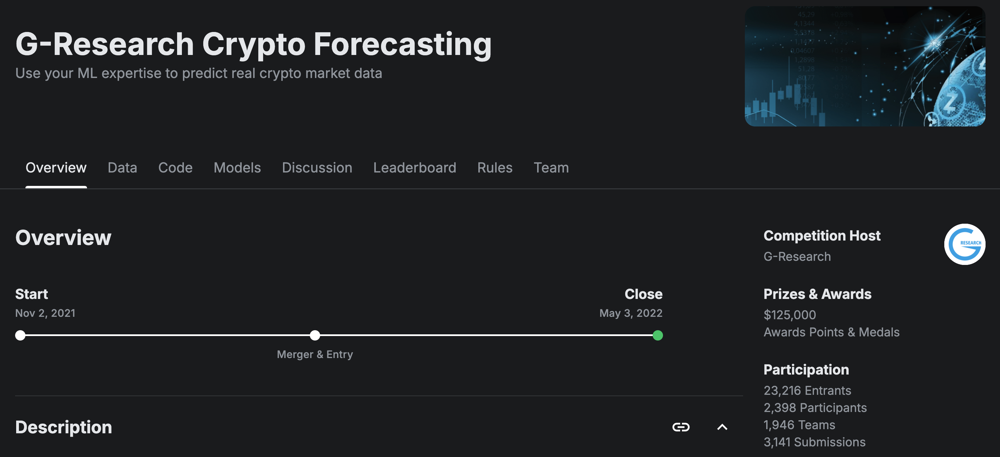
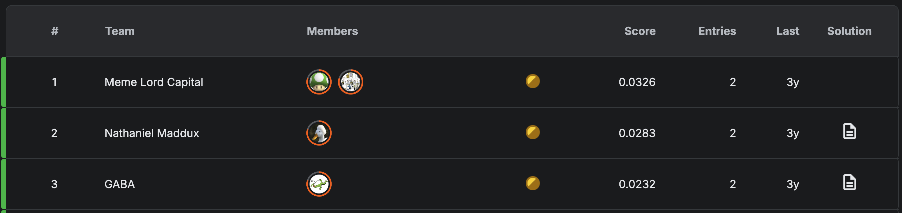
| Age | Height | Weight | Location | HealthStatus |
|---|---|---|---|---|
|
Loading ITables v2.2.3 from the internet...
(need help?) |
| Age | Age_Group | Height | Weight | Location | HealthStatus |
|---|---|---|---|---|---|
|
Loading ITables v2.2.3 from the internet...
(need help?) |
| Age_Group | Height | Height_Normalized | Weight | Weight_Normalized | Location | HealthStatus |
|---|---|---|---|---|---|---|
|
Loading ITables v2.2.3 from the internet...
(need help?) |
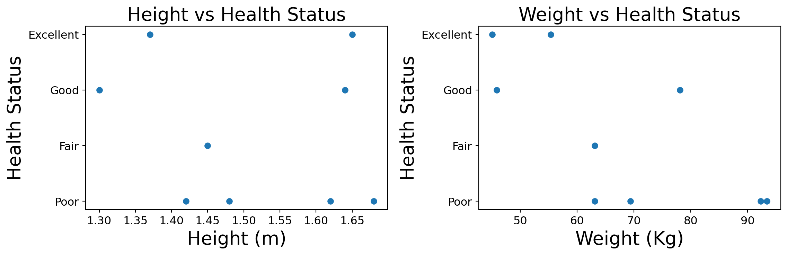
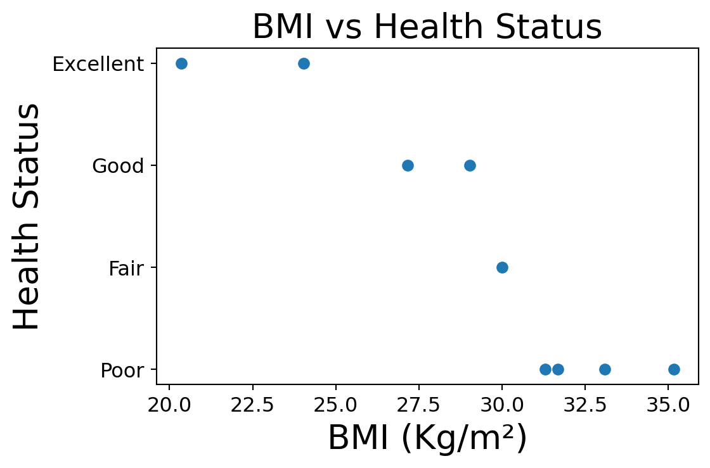
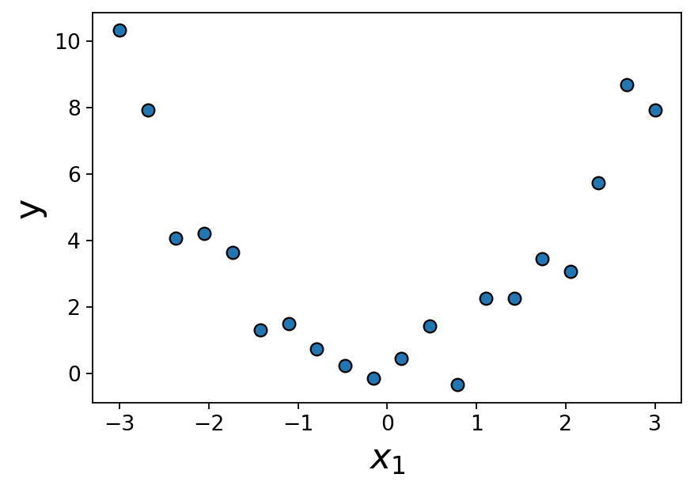
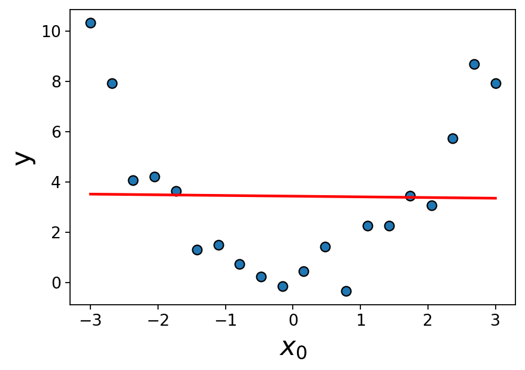
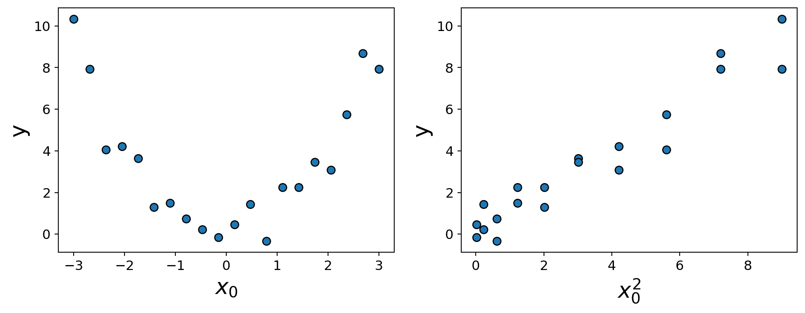
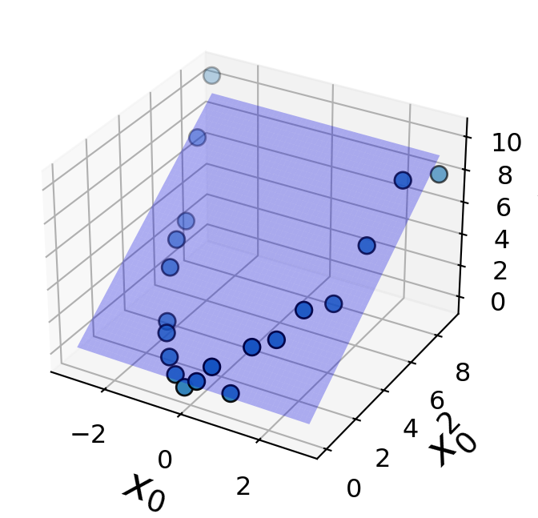
sklearnfrom sklearn.preprocessing import PolynomialFeatures
poly_feats = PolynomialFeatures(degree=2)
X_enc = poly_feats.fit_transform(X_toy)
pd.DataFrame(X_enc, columns=poly_feats.get_feature_names_out()).head()| 1 | x0 | x0^2 | |
|---|---|---|---|
| 0 | 1.0 | -3.000000 | 9.000000 |
| 1 | 1.0 | -2.684211 | 7.204986 |
| 2 | 1.0 | -2.368421 | 5.609418 |
| 3 | 1.0 | -2.052632 | 4.213296 |
| 4 | 1.0 | -1.736842 | 3.016620 |
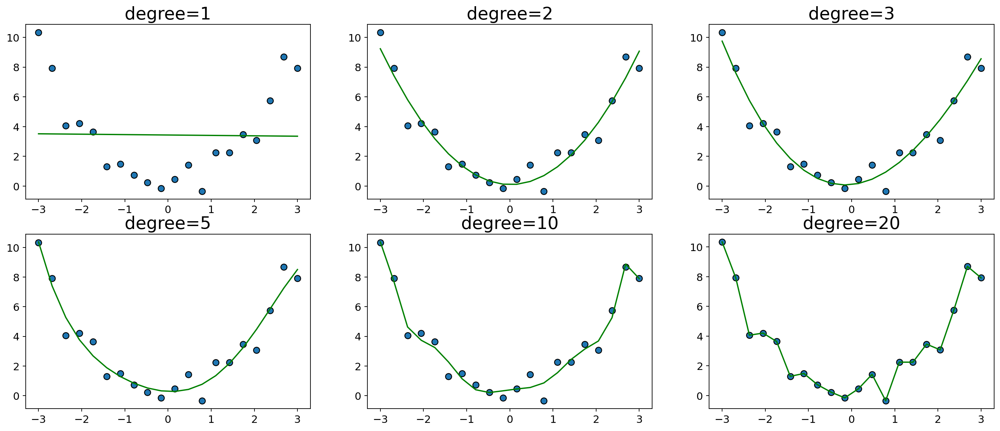
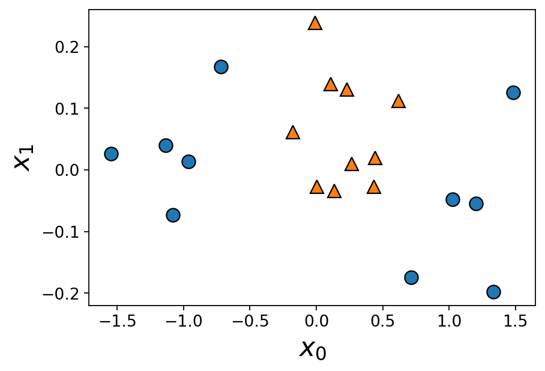
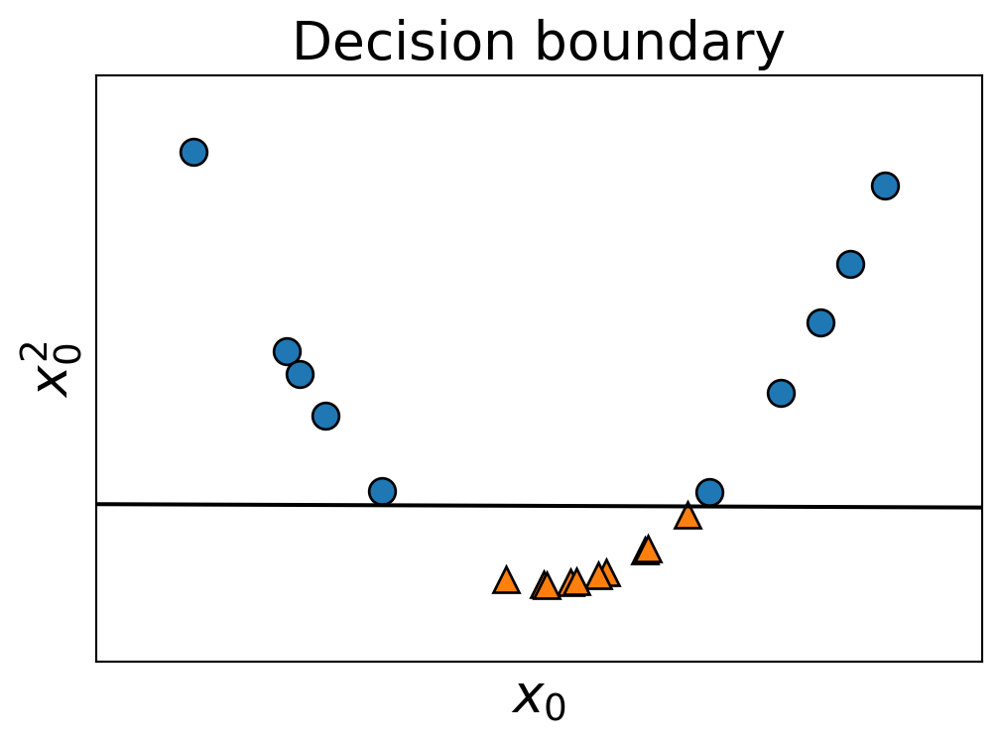
| UserName | ScreenName | Location | TweetAt | OriginalTweet | Sentiment | |
|---|---|---|---|---|---|---|
|
Loading ITables v2.2.3 from the internet...
(need help?) |
DSCI 573